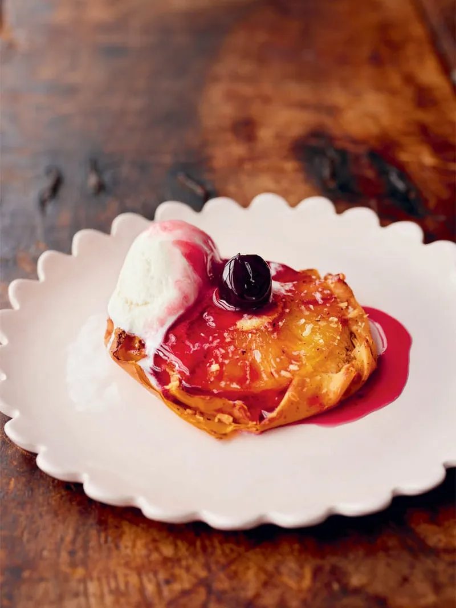

“To round off this 3 course veggie meal, we got a special pineapple dessert. It might seem tricky, but trust us, it's well worth it!"
ON THE DAY: Sprinkle the sugar into a large non-stick frying pan on a medium-high heat, then add the juice from the pineapple tin, along with a splash of water. Let it simmer until bubbling and the sugar has dissolved, then carefully place six pineapple rings into the pan. Cook until the syrup has reduced and the pineapple is lightly golden on each side, turning halfway and gently swirling them in the syrup occasionally, then turn the heat off and leave to cool completely.
Meanwhile, whisk the coconut, almonds, vanilla paste and milk together. Lay out one filo sheet, brush with a little olive oil and add a few scrapings of nutmeg, then repeat, stacking up all three sheets. Cut into six squares, then divide the sponge batter between them, spooning it into the centre of each and spreading it out a little. Top each with a sticky pineapple ring, gently pressing them into the batter. Casually fold the filo upwards around the pineapple (like you see in the picture), lining the tartlets up on a lightly oiled baking tray as you go. Sprinkle with a little extra desiccated coconut, then spoon over any remaining syrup from the pan. Cover, and refrigerate till needed.
TO SERVE: Preheat the oven to 180°C/350°F. Bake the tartlets on the bottom of the oven for 20 minutes exactly. Serve with a cherry in the centre of each and a drizzle of cherry syrup. Finish with a dollop of yoghurt or a scoop of ice cream.
Back to Main page or check out Veggie Quesadillas or Campfire Bread